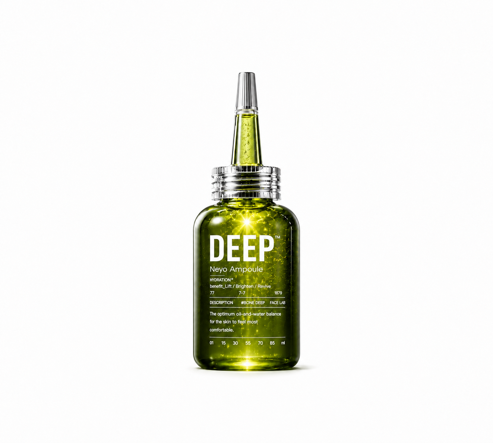
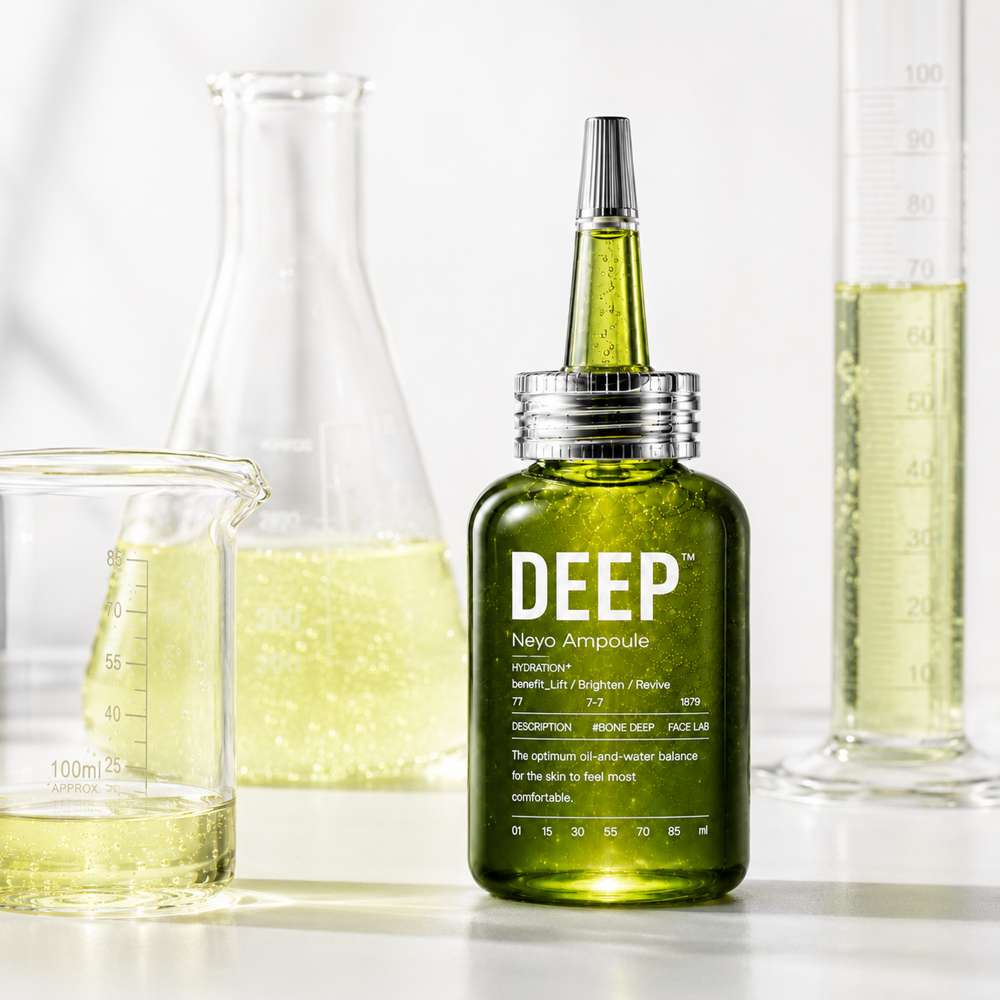
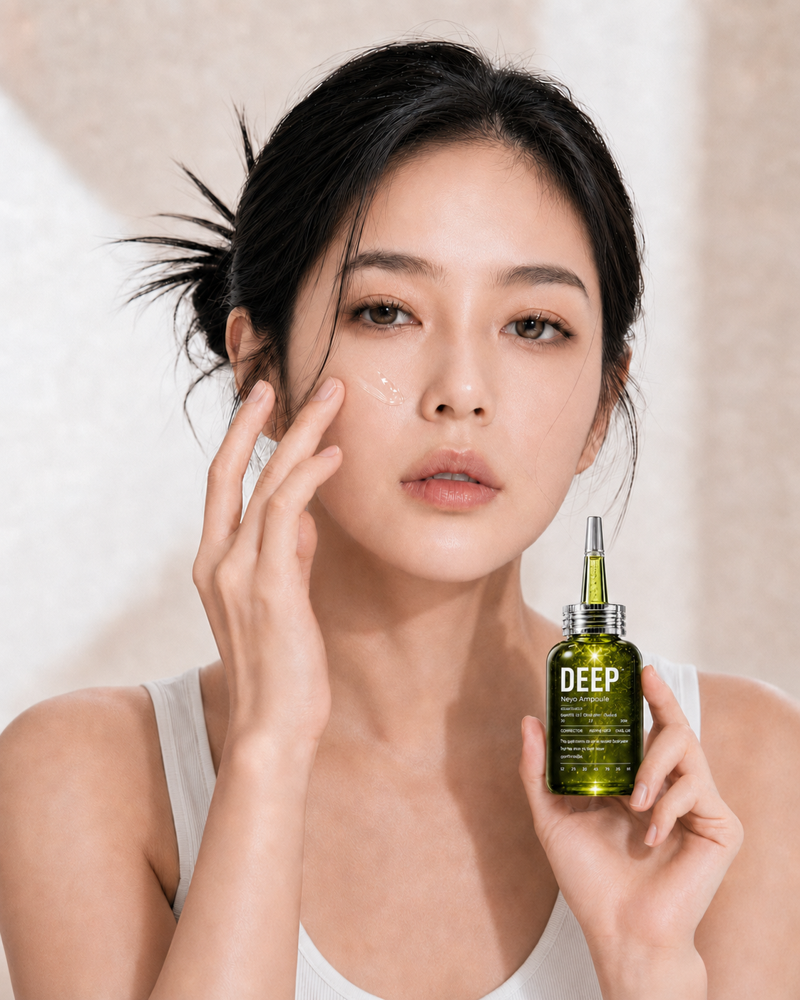
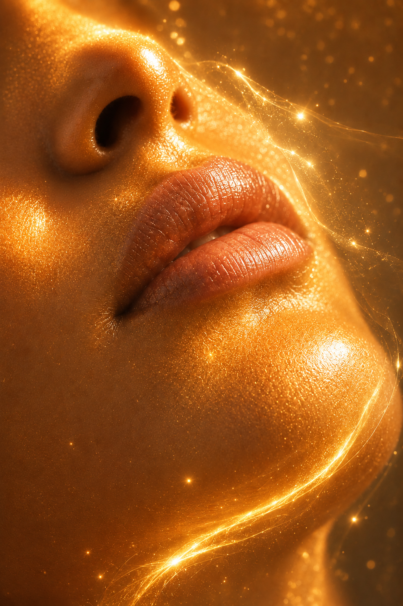
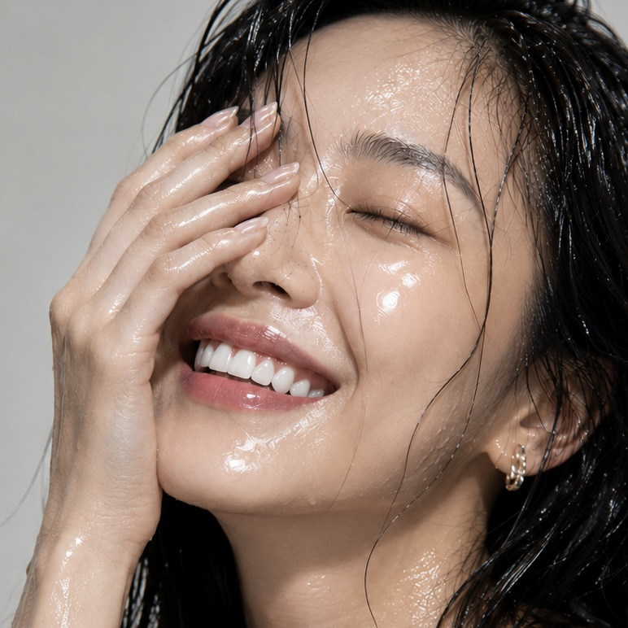
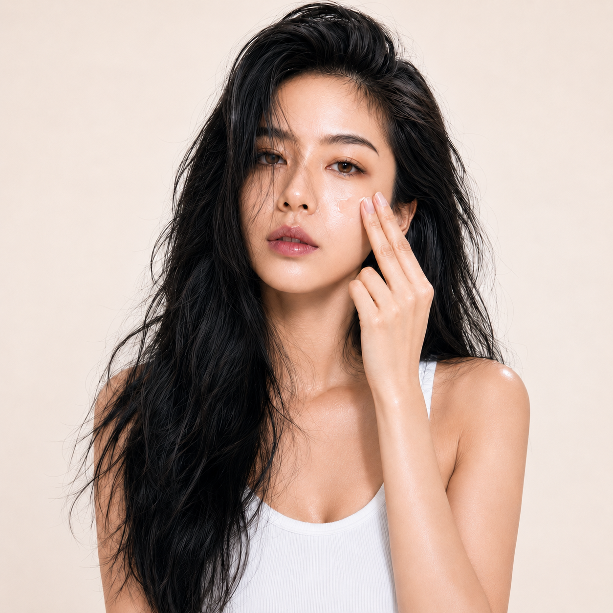

산화와 당화를 동시에 케어하는 슈퍼 안티에이징 샷.
순수 비타민C 15%, 비타민E 1%, 페룰릭애씨드 0.5%를 중심으로 항산화·항당화·브라이트닝·광채 케어를 하나의 고농축 포뮬러에 담았습니다.
피부는 자외선과 외부 환경으로 인한 산화 스트레스뿐 아니라, 당과 단백질이 결합하는 당화 과정으로 인해 점차 칙칙하고 탄력을 잃은 인상으로 변할 수 있습니다.
DEEP™ NEYO AMPOULE은 강력한 항산화 블렌드와 항당화·브라이트닝·탄력 케어 성분을 정교하게 결합해 복합적인 피부 노화 징후를 한 번에 관리합니다.
"산화를 방어하고, 당화 흔적을 관리하고, 피부톤은 맑게, 광채는 선명하게."

순수 비타민C 15%, 비타민E 1%, 페룰릭애씨드 0.5%를 정교한 비율로 배합해 피부의 항산화·브라이트닝·광채 케어 효과를 높였습니다.
페룰릭애씨드는 비타민C와 비타민E의 항산화 시너지를 보완하고, 쉽게 불안정해질 수 있는 비타민 포뮬러의 안정적인 사용을 돕습니다.
펩타이드가 건조하고 힘을 잃은 피부에 수분과 탄력 케어를 제공해 매끄럽고 탄탄한 피부결로 가꿔줍니다.
브라이트닝 중심의 항산화 앰플에 탄력 케어를 더해 복합적인 피부 노화 징후를 균형 있게 관리합니다.
"피부톤은 맑게, 피부 인상은 탄탄하게."


비타민E가 순수 비타민C와 함께 항산화 시너지를 형성하고, 외부 환경으로 건조하고 지친 피부에 보습과 컨디셔닝을 제공합니다.
피부를 부드럽고 건강하게 가꾸며 고함량 비타민C 포뮬러의 균형을 완성합니다.
"항산화 시너지는 강하게, 피부는 편안하게."
대표적인 항산화 성분인 글루타치온이 순수 비타민C와 함께 칙칙한 피부톤을 맑고 균일하게 관리합니다.
산화 스트레스로 생기를 잃고 어두워 보이는 피부에 깨끗하고 투명한 광채를 더해줍니다.
"칙칙함은 걷어내고, 피부 본연의 투명한 빛을 깨우다."

"단순한 미백을 넘어, 피부 노화의 시작을 관리하는 슈퍼 안티에이징."
순수 비타민C 15%가 산화 스트레스로 지친 피부를 보호하고 칙칙한 안색과 색소침착, 잡티 흔적을 집중적으로 관리합니다.
불균일한 피부톤을 맑고 균일하게 가꾸며 생기를 잃은 피부에 선명하고 건강한 광채를 더해줍니다.
"순수 비타민C 15%로 깨우는 맑고 선명한 피부 광채."
식물에서 발견되는 대표적인 항산화 성분인 페룰릭애씨드가 비타민C와 비타민E의 항산화 효과를 보완합니다.
고함량 비타민 포뮬러의 안정성을 높이고 외부 환경으로 생기를 잃은 피부를 맑고 건강하게 관리합니다.
"비타민의 항산화 시너지를 완성하는 0.5%."
"피부의 시간에 맞서는 고농축 세 방울."

순수 비타민C 15%는 높은 효능을 기대할 수 있지만 피부에 따라 따가움이나 자극이 느껴질 수 있습니다.